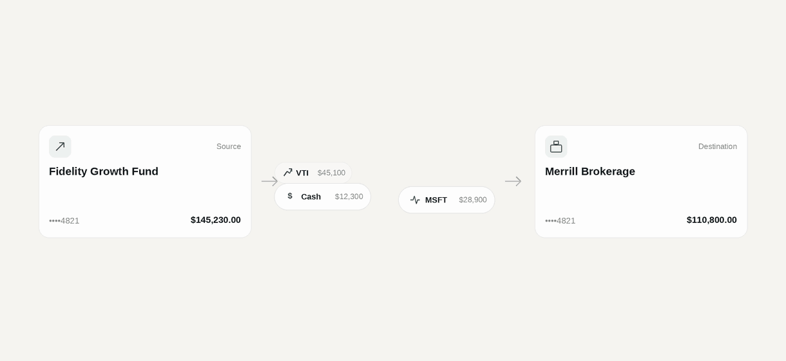
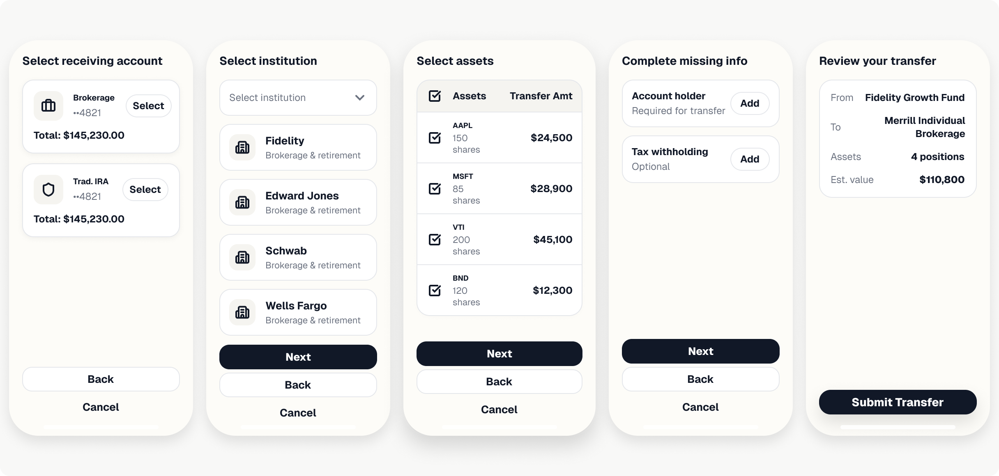
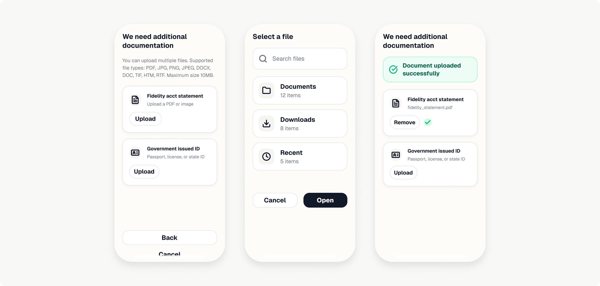

Redesigning a flow that handles ~100K annual transfers and targeting a 30% reduction in stalled requests — across legacy systems, cross-org stakeholders, and real ambiguity about what data we'd ultimately have access to.

Screens shown are representative sketches — original work is under NDA and has not yet launched.
The existing flow ran on a legacy design system with no pattern language, required integrating BankLink — an external institution-selection screen outside our control — and sat on top of an Open Finance API layer that returned messy, incomplete data. The result: transfers routinely stalled from missing documents, driving support costs and eroding client trust.
Create a cohesive, trust-building transfer experience that eliminates failure modes at their source — moving document collection ahead of submission to prevent stalled transfers, and dynamically scoping forms to only what's missing to reduce cognitive load.

The entry point where clients begin an incoming or outgoing transfer — with Bank Link integration that prefills personal, account, and asset data.
Screens shown are representative sketches — original work is under NDA and has not yet launched.

Moving document upload before submission to prevent NIGOs. Clients upload required documents inline, reducing missing-document rejections.
Screens are representative wireframes due to NDA.
The real risks heading into MVP are full Helix and ADA compliance across every screen, and how much data the API integration actually returns — the designs account for both, but the experience quality depends on how little manual entry clients need. If I were doing this again, I'd spend more time on strategic design direction earlier and less time eager to get into screens — a deliberate shift toward lead-level work.